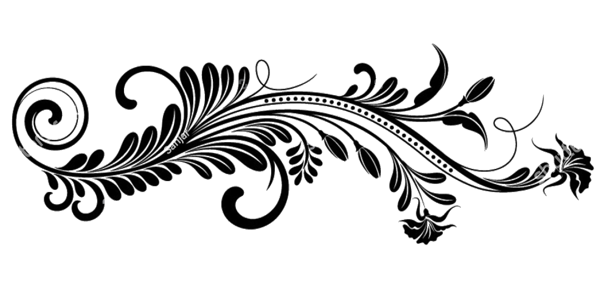
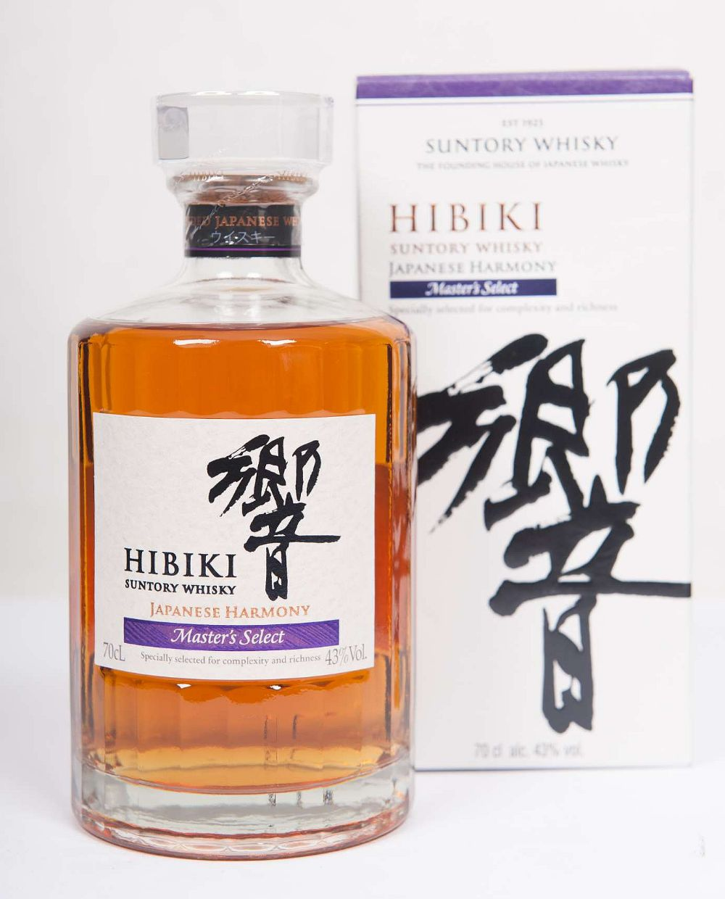
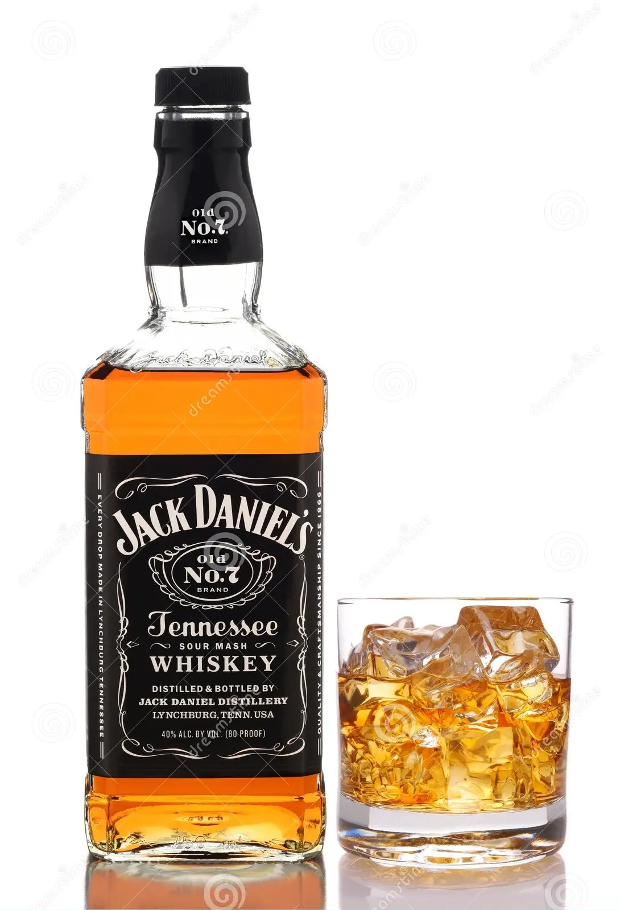
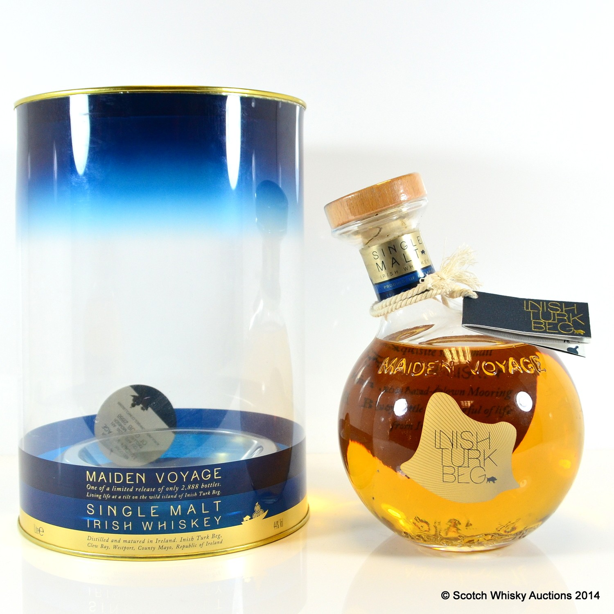

Welcome to Whisky world
Expolre the finest Whisky selections from all over the world
Learn some history
Expolre the finest Whisky selections from all over the world
Learn some history

Whisky or whiskey is a type of liquor made from fermented grain mash.
Various grains (which may be malted) are used for different varieties, including barley, corn, rye, and wheat.
Whisky is typically aged in wooden casks, which are typically made of charred white oak.
Uncharred white oak casks previously used for the aging of port, rum or sherry are also sometimes used.
Whisky is a strictly regulated spirit worldwide with many classes and types. The typical unifying characteristics of the different classes and types
are the fermentation of grains, distillation, and aging in wooden barrels.

Japan/Suntory Whisky
Hibiki (Japanese: 響) (meaning "resonance" or "echo") is a premium blended whisky produced in Japan by Suntory Global Spirits, a subsidiary of Suntory Beverage & Food Ltd, which itself is a subsidiary of Suntory Holdings of Osaka, Japan. It has won several awards.
A new expression called "Japanese Harmony", with no age statement, was introduced in 2015. The new blend was said to use the same malt and grain whiskies used in the first Hibiki blend, being a blend of at least 10 malt and grain whiskies from three distilleries, aged in five different cask types, with some elements aged up to approximately 20 years.

Scotch Whisky
When it comes to exceptional Scotch whiskies, few names resonate as profoundly as Lagavulin. Known for its rich flavors, complex aromas, and profound history, Lagavulin is a masterpiece in whisky craftsmanship. Lagavulin’s storied journey began in 1816 when John Johnston established the first legal distillery on the site. Located on the southern coast of Islay, Scotland, this site was ideal for whisky production due to its access to pristine water sources and abundant peat. The name “Lagavulin” itself means “hollow by the mill” in Scots Gaelic, reflecting its scenic location.
Very thick and rich. A massive mouthful of malt and Sherry with good fruity sweetness, but also a wonderful sweetness. Big, powerful peat and oak. Long, spicy finish, figs, dates, peat smoke, vanilla.

Jack Daniel's is technically a bourbon in that it is a distilled spirit aged in new barrels and made primarily from corn, but it actually falls into a more specific category: it is considered and marketed as a Tennessee whiskey.
Legal status. On a federal level, the definition of Tennessee whiskey is legally established under the North American Free Trade Agreement (NAFTA) and at least one other international trade agreement that require it to be "a straight Bourbon whiskey authorized to be produced only in the State of Tennessee".

A very special whiskey from a very special place. Inish Turk Beg means (Small island of wild boar). Distillate from the Cooley Distillery was taken to the island of Inish Turk Beg and finished in ex poitin casks by the sea. Even the bottle shape is influenced by the sea and the Glass itself is said to be blown from sand from the shores of Inish Turk Beg.
A Rare find and sought after by many collectors. A limited release of only 2888 Bottles.
Its appearance is clear, pale gold and bright yellow flecks. The taste is huge but complex and well intergrated, slightly honeyed palate with cinnamon spice, red apple and burnt salty butter, with a rich, brandy butter influenced lightly spicy finish.
They differ in base product, alcoholic content, and quality.